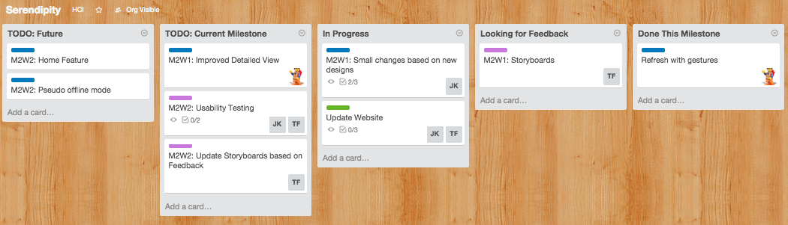

Tuesday - May 5, 2015: 3x3 Update

Three things we have done in the past week:
Refresh with gestures - map will refresh and pull data with each gesture and without the use of a button
Storyboards
a. Explore Points of Interests
b. Manage My Journey
c. Offline View and Navigation
Small design changes to the app:
a. Removed refresh button
b. Moved Search button to the left side
c. Added "Serendipity" name to the top panel of app
Storyboards Presented:


 Three things we will do this week:
Three things we will do this week:
Update and finalize design with Usability Testing (2-3 people each)
App Development - Improve detailed view
Update website with more material
Three things where we could advice or are blocked:
Storyboards
Feedback from Tuesday Class:
Search Storyboard (a.k.a Explore Points of Interests)
Asking for the next destination to navigate to
default would be to navigate to the next place ont he list
have a button to edit the place to navigate to
Storyboard 2 = screens 2-4 set up a plan but @Storyboard 3 = the user is sorta in the middle of this plan, working through it like a checklist
maybe have a third state to indicate where they are in the plan
Need to take into account the schedules of the places (business hourse) - provide that meta detat on the journey list so that the user is aware of it
Add a "closing soon" note
Detours = need to be aware that journey is still available to navigate away from the path
Finding interesting places nearby
Filter out the noise for places the user wouldn't want to go to
Cut down on the number of places to see
Note: Edit button needs to be removed from the Journey list view
Thursday - May 7, 2015: Meeting Update
Go lower fidelity:
Do brainstorms
Storyboard/exploration
Go out and talk to people about designs (target group)
Explore where you want to go and integrate into plan
Nail down the design
Explore what makes Serendipity different than just a navigation app
What are you exploring?
Include serendipitous nature/element
If we really focus on ____, where can we push it and then where does it go?
Deep pushes and the pull back with what was good in the design
ADVICE: find that one scenario that make Serendipity unique - think of it from a business perspective (understand the user, what other products do do - switching costs of current users)